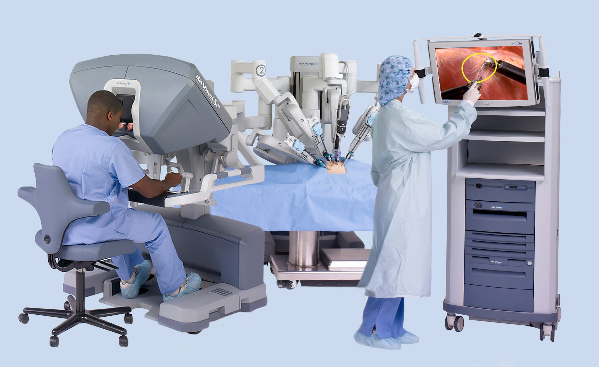
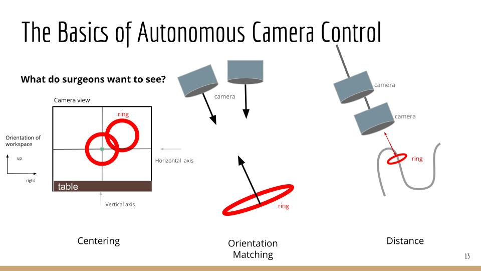
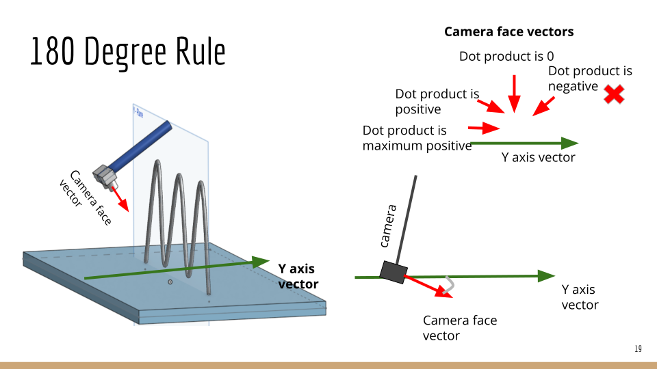

Working With the DaVinci
If you are familiar with the world of surgical robotics, you know the famous DaVinci Robot. For my second capstone at UBC, a team of 3 others and I were lucky enough to get to be partnered with a an R&D lab at UBC that is works with the surgical robot.
This is a teleoperated robot that assists surgeons while performing minimally invasive surgery. The surgeons interact with the robot through a console where they can control its movements, and the view the surgical workspace through a camera feed.
But robot-assisted-tele-operated-surgery still has its drawbacks. The surgeons use both their arms to control the robot's arms, but when they want to switch the viewpoint of their workspace, they gave to use the clutch to then connect to the camera joints to be able to control its position instead of the robot's. As you can imagine, this involves a lot of back and forth, and stopping the current task they they are working on to switch their viewpoint.
Our job, as the team of Capstone students, is to automate the camera movements of the robot so that it follows the surgical task taking place. This would reduce the cognitive load applied on the surgeons, and hopefully help them perform surgeries faster, and with a bit more ease. The best analogy would be them switching from driving a stick operated car to an automatic.
Into the techincal side ...
Our optimation framework is built around a "ring walk" task instead of in a surgical setting. This is a task that surgeons also use to train on before performing surgery with the DaVinci system. The task is that you move a ring through a wire without the edges of the ring touching the wire inside it. Our job was to automate the camera following the ring moving through the track.

We decided to take an optimization approach to this problem. By building on previous work done by the lab, we took a set of 8 movement goals or rules that the camera should follow while the robot is operating. We assign weights to how much we value that particular rule, and the algorithm works with minimizing the possible losses.
All of the coding for this project was done in Python, and we used CoppeliaSim to simulate our results.
The initial Objective Rules for the camera's motion are:
- L1: Centering
- L2: Orientation Matching
- L3: Appropriate Distance
- L4: Horizontal Axis Alignment
- L5: Vertical Axis Alignment
- L6: Minimized Velocity Magnitude for Camera
- L7: Minimized joint velocity
- L8: Collision Prevention
An image defining these rules better is shown below:
My Role
My role in the project was to develope the optimization framework further. We wanted to optimize the weights for each of the loss terms, to decide their final values. And also add any additional objectives that might need to be included for the best camera motion. I added a new objective inspired by cinematography, called the 180 - Degree Rule. We wanted the camera to always stay on the POV of the audiance.

This was implemented by taking the dot product between the normalized global y vector, and the vector defining the orientation of the camera
Finally, I retuned the weights to give us the lowest possible errors, and the final optimation framwork in simulation is shown below